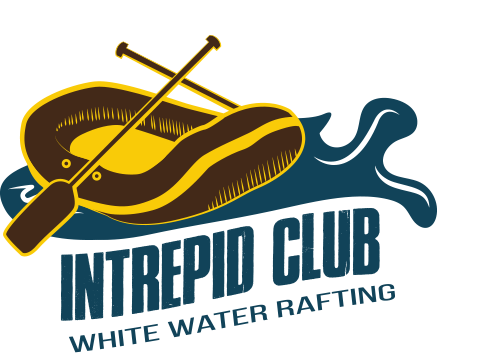

Overview
Purpose
Intrepid Club guarantees an unforgettable adventure. We are passionate about rafting and we have been sharing this experience for 30 years. Intrepid Club offers access to the best whitewater rivers in Utah and Idaho. Intrepid Club is recognized for providing high-quality gear and a professional team that will assure you comfort, safety, and fun. Whether you are experienced or beginner you will find the service that best meets your needs. Our personalized trips allow you to enjoy the whole experience; learn and improve rafting techniques, admire the beauty of nature, feel the rush, and connect with people that you love. Intrepid Club´s website will provide detailed information about the areas where it operates, gear, and trip packages. It will provide 24-hour live chat assistance and contact information. People will be able to purchase available merch on our website.
Audience
Intrepid Club is targeted to families, youth, young adults, and individuals who reside in or visit Utah and Idaho. To people from 13 to 65 who are interested in learning and practicing white water rafting. These people are interested in extreme physical activities, and nature, enjoy proper health conditions, and love experiencing adventure. The target audience is interested in a fun, friendly, and safe experience while they learn and/or practice rafting skills. Many people will have access to their mobile devices, like smartphones and tablets. The website will be also available for desktops and laptops.
Branding
Website Logo
Style Guide
Color Palette
- primary-color: Indigo dye #114359
- primary-color: Blue (NSC) #248FBC
- accent1-color: Ash gray #9BBFBF
- accent2-color: Persian orange #C98F69
- accent3-color: Jonquil #F9CB08
Palette URL: https://coolors.co/114359-248fbc-9bbfbf-c98f69-f9cb08
Typography
Headings Font: Oswald
This is a Heading
Normal Text/Paragraph Font: Inter
Inter family font for paragraphs. Inter is a sans-serif font.
Colored Callout Font: Inter
Inter family font for callout box. Inter is a sans-serif font.
Navigation
Wireframes
Home Page Wireframe

About Us Page Wireframe